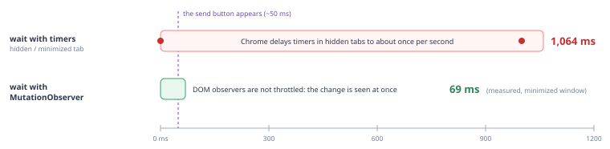
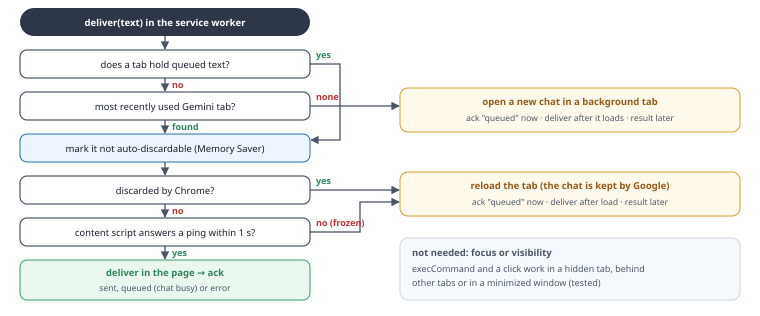

Delivering into hidden, minimized, throttled or discarded tabs
در استفادهی واقعی، تب Gemini تقریباً هیچوقت جلوی چشم نیست: پشت تبهای دیگر است، یا پنجرهی Chrome کوچک شده، یا
ساعتها دست نخورده. این پرریسکترین بخش پروژه بود، چون Chrome برای صرفهجویی در باتری و حافظه با تبهای پنهان سه کار
میکند: کند کردن تایمرها، یخ زدن (freeze) و بیرون انداختن از حافظه (discard).
اول آزمایش، بعد طراحی Experiments first
قبل از هر تغییری، چند آزمایش روی Chrome 157 انجام شد تا معلوم شود کدام ترس واقعی است:
دستور execCommand و کلیک روی دکمه در تب پنهان و بدون فوکوس کار میکنند. پس نیازی به جلو آوردن تب نیست.
تایمرها در تب پنهان واقعاً تا حدود یک ثانیه عقب میافتند: ارسال در پنجرهی minimize شده ۱۰۶۴ میلیثانیه طول میکشید.
بعد از ۷ دقیقه minimize (کندسازی شدید)، تحویل هنوز کار کرد و تب نه یخ زد و نه discard شد.
جمینای در تب پنهان به تولید جواب ادامه میدهد و صف همانجا خالی شد (۲۹ ثانیه). تب بعد از حدود ۴ ساعت در پسزمینه هنوز سالم بود.

شکل ۱۴-۱ — همان تحویل با دو روش انتظار. تایمرها در تب پنهان کند میشوند؛ ناظر DOM نه.
چرا MutationObserver به جای تایمر؟
کد تحویل باید منتظر چیزهایی بماند: ظاهر شدن دکمهی ارسال، خالی شدن جعبه، یا آمدن نوبت تازه. نسخهی اول با تایمرهای
کوتاه بررسی میکرد، و هر بررسی در تب پنهان یک ثانیه عقب میافتاد. تابع کمکی انتظار حالا با هر تغییر DOM شرط را
دوباره بررسی میکند؛ تایمر فقط برای مهلت نهایی است، که دیر شدنش فقط در حالت شکست مهم است. نتیجه: ۶۹ میلیثانیه به جای
۱۰۶۴ میلیثانیه.
انتخاب و نگهداری تب مقصد Choosing and protecting the tab

شکل ۱۴-۲ — تصمیم service worker برای هر تحویل. هر مسیر کند (تب تازه، reload) فوراً queued جواب میدهد و نتیجه را بعداً گزارش میکند.
تب مقصد از discard شدن محافظت میشود (autoDiscardable: false)، پس Memory Saver آن را بیرون نمیاندازد.
قبل از تحویل یک ping سریع فرستاده میشود. اسکریپت زنده در چند میلیثانیه جواب میدهد؛ تب یخزده هرگز. اگر در یک ثانیه
جوابی نیامد، تب reload میشود — گفتوگو را Google نگه میدارد — و متن بعد از بارگذاری تحویل داده میشود.
اگر تب از قبل از نصب یا reload افزونه باز بوده و اسکریپتی ندارد، اسکریپت با chrome.scripting تزریق میشود.
اگر هیچ تب Geminiای نباشد، یک چت تازه در یک تب پسزمینه باز میشود، باز هم بدون گرفتن فوکوس.
قابل تست نبود (و صادقانه نوشته شد)
یک discard یا freeze واقعی توسط Memory Saver در محیط تست رخ نداد؛ اولی با autoDiscardable جلوگیری میشود و هر
دو با مسیر reload پوشش داده شدهاند. صفحهی هنگکرده (بدون جواب به ping) با شبیهسازی تست شد: تب reload شد و متن در
همان گفتوگو تحویل داده شد (۹ ثانیه).
IN AN INTERVIEW
This was the highest-risk part, so I ran experiments before designing. They showed that execCommand and clicks work in
a hidden tab without focus, but that Chrome throttles timers there to about one second. I replaced timer polling with
a MutationObserver-based wait, which took a minimized-window send from 1,064 ms to 69 ms. The target tab is marked
not auto-discardable, a one-second ping detects frozen pages, and a discarded or frozen tab is reloaded and the text
delivered after load, reported as queued plus a later result.
Interview questions
What does Chrome do to background tabs?
It throttles timers (about once per second, and much more after minutes hidden), can freeze pages, and can discard
them to save memory. Each needs its own answer.
Why did the MutationObserver fix the latency?
Observer callbacks run when the DOM changes and are not throttled like timers. The wait no longer depends on when a
delayed timer happens to fire.
How do you detect a frozen tab?
A ping with a one-second timeout. A live content script answers in a few milliseconds; a frozen or hung page does
not, so it is reloaded.